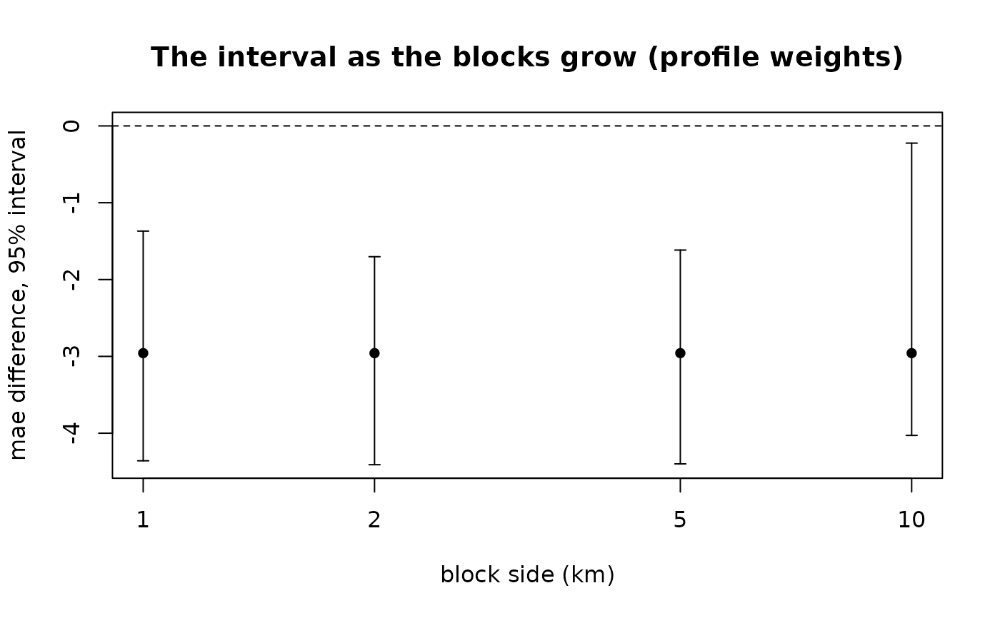

block_bootstrap() for blocks of growing side. Blocks smaller than the
distance over which the values resemble each other are themselves
dependent, and their interval is still too narrow; where the width stops
growing, they no longer are.
Arguments
- x, y
Coordinates, as in
equal_area_blocks().- obs, pred, against
As in
block_bootstrap().- sizes_km
The block sides to try, in km.
- metric
One metric, as in
block_bootstrap().- weights
One weighting, as in
block_bootstrap().- n_boot, conf, seed
As in
block_bootstrap().- coords, centre
As in
equal_area_blocks().
Value
A block_bootstrap_by_size: a tibble, one row per size, with
size_km, n_blocks, the estimate (or the difference), ci_low,
ci_high, width and n_effective.
Examples
ex <- example_landscape()
obs <- ex$profiles$soc_stock
set.seed(1)
pred_a <- obs * exp(rnorm(length(obs), 0, 0.20)) # two models' predictions
pred_b <- obs * exp(rnorm(length(obs), 0, 0.25))
s <- block_bootstrap_by_size(ex$profiles$x, ex$profiles$y, obs, pred_a, against = pred_b,
sizes_km = c(1, 2, 5, 10), n_boot = 500)
s
#> # A tibble: 4 × 7
#> size_km n_blocks difference ci_low ci_high width n_effective
#> * <dbl> <int> <dbl> <dbl> <dbl> <dbl> <dbl>
#> 1 1 84 -2.96 -4.36 -1.37 2.99 160
#> 2 2 60 -2.96 -4.41 -1.70 2.71 160
#> 3 5 18 -2.96 -4.40 -1.62 2.78 160
#> 4 10 6 -2.96 -4.03 -0.224 3.80 141.
plot(s)
